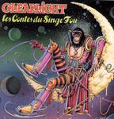

| Artist: | Clearlight |
| Title: | Les Contes Du Singe Fou |
| Label: | Clearlight Music C8M-003 |
| Length(s): | 40 minutes |
| Year(s) of release: | 1977/2005 |
| Month of review: | [08/2005] |
| 1) | The Key - I The Outsider | 5.17 |
| 2) | The Key - II A Trip To The Orient | 5.45 |
| 3) | The Key - III Lightsleeper's Despair | 2.40 |
| 4) | Soliloque | 5.21 |
| 5) | Time Skater - I Prelude | 1.50 |
| 6) | Time Skater - II Countdown To Eternity | 4.28 |
| 7) | Time Skater - III The Cosmic Crusaders | 9.11 |
| 8) | Stargazer | 2.32 |
| 9) | Return To The Source | 3.41 |
...and that turned out to be quite something. The style of the music is not as non-sensical as the artwork might suggest. The style poetic, almost approaching the Italian progressive style. Most tracks receive their melodic form from piano, the vocals reminding (in timbre, that is) of Steve Walsh during Kansas' heydays. Apart from the piano we also get a decent amount of electrical violin, Ponty style.
The Key is a bit of an epic track, with sparkling piano, spirited song and driving bass & drum tandem. Its mid section features a lot of the aforementioned violin replacing the vocals, leading up to the Ponty reference. The closing section returns to the style of the opening section, with the combination of the vocals and the occasional violin setting the ghost of Kansas in the back firmly.
Soliloque opens as a sparkling piano piece, but manages to add in diction with both piano play, and the addition of the rhythm section and violin, thus nearing the sort of expressiveness you might expect from a vocal piece.
Time Skater's start could have been on Genesis' Lamb (in fact, I think it was), but as Bellamy's vocals move into a higher range and the piano once again blends it -supported by the versatile drums- that memory is gone. The violin driven bit in the third section is a tad on the long side, threatening the tension of the composition. The two closing tracks are a bit heavy on the violin too, resulting in the album closing on less than its best form. Maybe it would have been better at 35 minutes, but who's counting.
Just one technical bit: at the start of Time Skater I hear what very much sounds like statictic ticking of a vinyl record. That could be me, but I'm quite clear about hearing static in multiple spots.